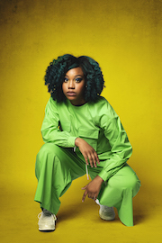

The Friday Night Show
Friday 1st July 2022
Shoreditch Town Hall's Assembly Hall
This year for the first time ever, ARG is partnering with Shoreditch Town Hall to also present The Friday Night Show — a one-off spectacular show featuring an all-star line-up.
Tickets available from Shoreditch Town Hall for just £18. Weekend ticket holders get Friday tickets for just £10.
Phil Wang
 One of the UK's most exciting comedians and star of Live At The Apollo, Have I Got News For You and his very own global Netflix special Philly Philly Wang Wang!
One of the UK's most exciting comedians and star of Live At The Apollo, Have I Got News For You and his very own global Netflix special Philly Philly Wang Wang!
“At the top of his game… Inspired work from a comic who just gets better and better” ★★★★★ Time Out
Photo by Matt Stronge.
Rosie Jones
 The raucous and rip-roaringly funny star of Live At The Apollo, 8 Out Of 10 Cats, Casualty and her very own Channel 4 travel show, Trip Hazard.
The raucous and rip-roaringly funny star of Live At The Apollo, 8 Out Of 10 Cats, Casualty and her very own Channel 4 travel show, Trip Hazard.
“A masterly performer” One 4 Review
Photo by Aeman Sukkar / Jiksaw.
Josie Long
 The three-time Edinburgh Comedy Award nominee and star of two comedy specials, Cara Josephine on Amazon Prime and Something Better on Netflix.
The three-time Edinburgh Comedy Award nominee and star of two comedy specials, Cara Josephine on Amazon Prime and Something Better on Netflix.
“Riotously hilarious” ★★★★★ Skinny
“Full of love and defiant joy” ★★★★ Guardian
Photo by Matt Crockett.
Kemah Bob

Tour support for Hannah Gadsby, Nish Kumar, Desiree Burch and Jess Fostekew.
Creator, curator and host of The FOC IT UP Comedy Club, showcasing women and gender non-conforming comedians of colour.
Host of It’s A Sin - After Hours and co-host of The Island with Tom Allen.
Photo by Matt Crockett.
MC: Kiri Pritchard-McLean
 Host of hit podcast All Killa No Filla and as seen on Have I Got News For You, Live at the Apollo and Would I Lie to You?
Host of hit podcast All Killa No Filla and as seen on Have I Got News For You, Live at the Apollo and Would I Lie to You?
“an increasingly impressive comic, making powerhouse standup from the thorniest of subjects” ★★★★ Guardian
★★★★ List
★★★★ Telegraph
Photo by Drew Forsyth.
Plus many more acts to be announced…
Tickets
Tickets available from Shoreditch Town Hall for just £18. Weekend ticket holders get Friday tickets for just £10.